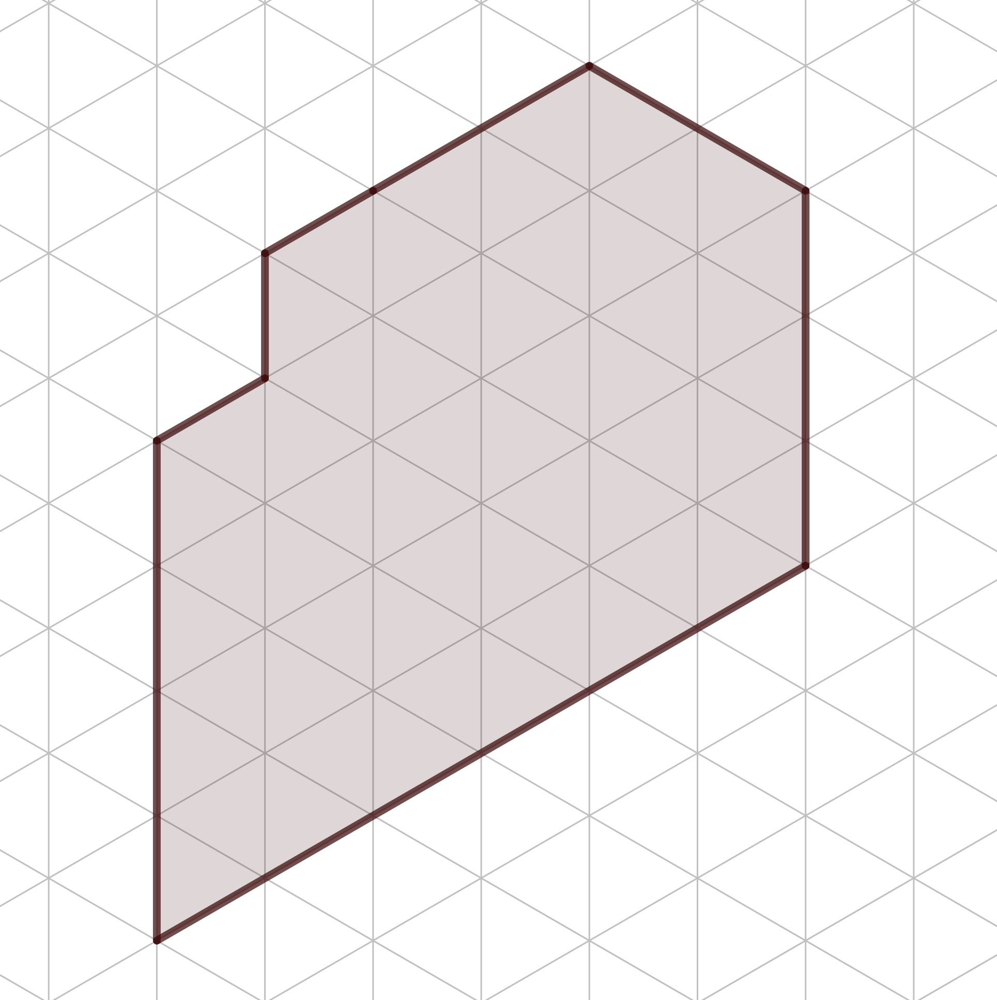
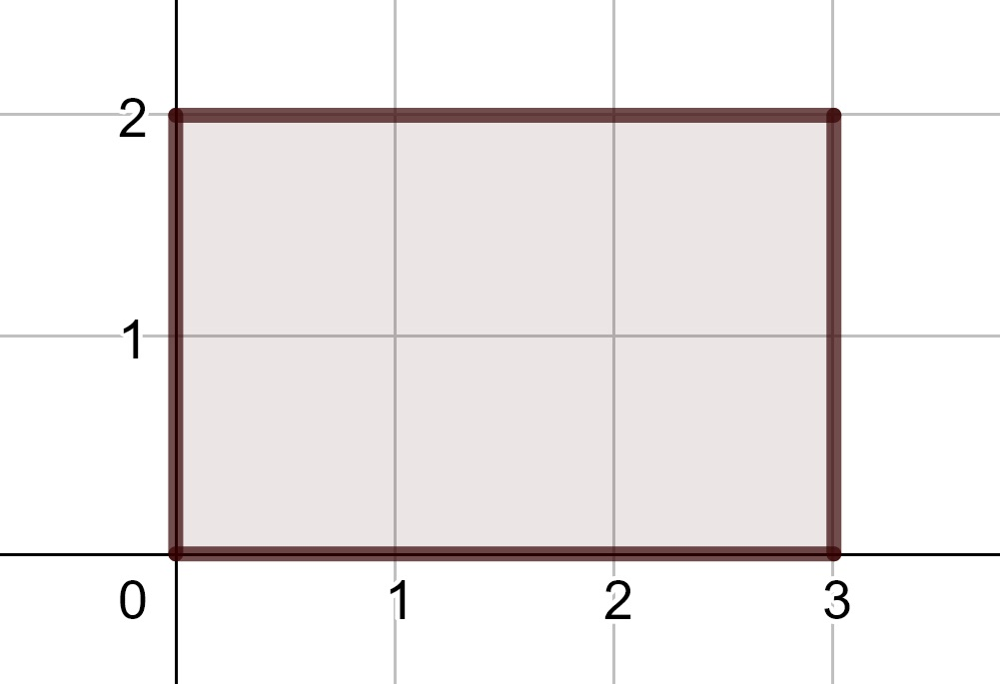
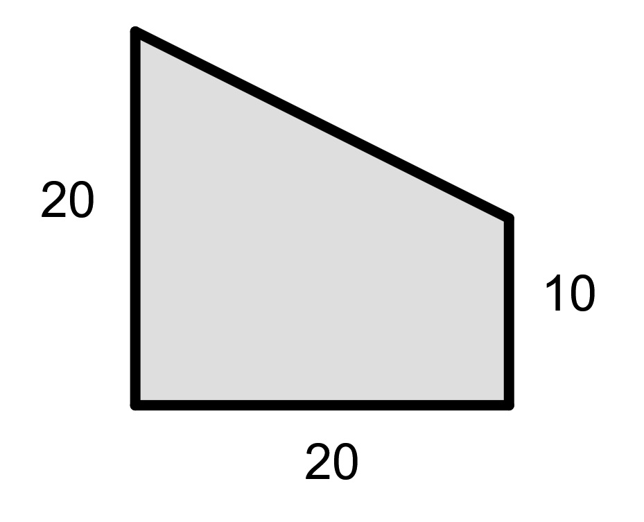

10.1 Units
The first things children measure are usually the number of discrete objects, such as a number of toys. This concept of measuring objects is then extended to distances, areas, volumes, and masses throughout the elementary curriculum. In each of these instances the concept of a unit of measurement is the essential topic.
10.1.1 Units of Length
In first and second grade students are introduced to the measurement of the length of certain objects. Initially this is done using shorter objects and then counting the number of the shorter objects contained in the larger object. This parallels the units of measurement based on the length of various parts of the body such as the forearm (cubits), a part of a finger (inches), or the length of the foot (feet). Students are then led to recognize the need for standard units of measurement in order to have a common vocabulary. Historically this standardization process was based on the measurements related to the king. However, when a monarch changed, so did the units of measurement. This standardization process led to the creation of the metric system in the eighteenth century and the current International System of Units (SI) where units of length are derived from a meter.
- (1.MD.2) Express the length of an object as a whole number of length units, by laying multiple copies of a shorter object (the length unit) end to end; understand that the length measurement of an object is the number of same-size length units that span it with no gaps or overlaps. Limit to contexts where the object being measured is spanned by a whole number of length units with no gaps or overlaps.
- (2.MD.1) Measure the length of an object by selecting and using appropriate tools such as rulers, yardsticks, meter sticks, and measuring tapes.
10.1.2 Units of Area
In third grade, students are introduced to the idea of measuring two-dimensional figures by determining the number of a certain two-dimensional objects that can fit inside the object being measured. Using isometric graph paper (made with equilateral triangles) one can determine the number of triangles that fit inside of an object. So in the figure below, the polygon in the figure below has an area of 54 triangles.

As a way to simplify the process of measuring area and to make a connection to units of length, the standard unit of measure for area is a square whose sides are 1 unit of the corresponding length measurement. So if one is measuring a planar figure whose edges would be measured using inches, the area is measured using squares whose side lengths are 1 inch. These units are then called square inches (or in\(^2\)).
- (3.MD.5) Recognize area as an attribute of plane figures and understand concepts of area measurement.
- A square with side length 1 unit, called “a unit square,” is said to have “one square unit” of area, and can be used to measure area.
- A plane figure which can be covered without gaps or overlaps by \(n\) unit squares is said to have an area of \(n\) square units.
- (3.MD.6) Measure areas by counting unit squares (square cm, square m, square in, square ft, and improvised units).
By using square units as the system of measurement, one can compute the area of a rectangle by taking the length measurements of adjacent sides and finding the product. So that a rectangle with sides of 2 cm and 3 cm would have an area of 6 square cm.

By focusing on the unit of measure corresponding to the actual square it helps students to differentiate between measurements related to perimeter and area, a common source of challenges for students.
10.1.3 Units of Volume
In a similar way to area, volume is often measured by the number of unit cubes that can fit inside of a three dimensional object. When volume is measured in terms of these cubes, the volume of a rectangular prism can be found by multiplying the edge lengths of the prism.
- (5.MD.3) Recognize volume as an attribute of solid figures and understand concepts of volume measurement.
- A cube with side length 1 unit, called a “unit cube,” is said to have “one cubic unit” of volume, and can be used to measure volume.
- A solid figure which can be packed without gaps or overlaps using \(n\) unit cubes is said to have a volume of \(n\) cubic units.
- (5.MD.4) Measure volumes by counting unit cubes, using cubic cm, cubic in, cubic ft, and improvised units.
- (5.MD.5) Relate volume to the operations of multiplication and addition and solve real world and mathematical problems involving volume.
- Find the volume of a right rectangular prism with whole-number side lengths by packing it with unit cubes, and show that the volume is the same as would be found by multiplying the edge lengths, equivalently by multiplying the height by the area of the base. Represent threefold whole-number products as volumes, e.g., to represent the associative property of multiplication.
- Apply the formulas \(V = l \times w \times h\) and \(V = b \times h\) for rectangular prisms to find volumes of right rectangular prisms with whole-number edge lengths in the context of solving real world and mathematical problems.
- Recognize volume as additive. Find volumes of solid figures composed of two non-overlapping right rectangular prisms by adding the volumes of the non-overlapping parts, applying this technique to solve real world problems.
- (6.G.2) Find the volume of a right rectangular prism with fractional edge lengths by packing it with unit cubes of the appropriate unit fraction edge lengths, and show that the volume is the same as would be found by multiplying the edge lengths of the prism. Apply the formulas \(V = l \times w \times h\) and \(V = b \times h\) to find volumes of right rectangular prisms with fractional edge lengths in the context of solving real-world and mathematical problems.
Another standard unit of measure for volume involves liquid measures such as liters, cups, or gallons. Such units make more sense in terms of the units being directly tied to volume, but are not as easy to connect to the linear or area units. In order to improve this connection the international standard units are established in a way to make this connection, as the cubic centimeter is equivalent to a milliliter.
- (3.MD.2) Measure and estimate liquid volumes and masses of objects using standard units of grams (g), kilograms (kg), and liters (l). Add, subtract, multiply, or divide to solve one-step word problems involving masses or volumes that are given in the same units, e.g., by using drawings (such as a beaker with a measurement scale) to represent the problem.
10.1.4 Units of Angle Measurements
Another type of unit needed in geometric mathematical modeling is a way to measure the size of an angle. One basic premise in creating a unit to measure an angle is to divide a circle into smaller pieces, with the primary unit being a degree. The determination to have 360 degrees in a circle may be based on an idea of 360 days in a year (with rounding). Another possibility for the origin is that a circle can be divided into six equilateral triangles. Each of these triangles is then divided into 60 parts, based on the base 60 number system of the Babylonians.
A second idea is to base the measurement of an angle on the length on a circle swept out by the angle. Using this foundation we can define a radian to be the angle swept out of a circle so that the arclength on the circle is the same as the radius of a circle. Since the radian is a ratio of lengths, it is a method of measuring that is dimensionless and so we do not write the unit name most of the time.
- (4.MD.5) Recognize angles as geometric shapes that are formed wherever two rays share a common endpoint, and understand concepts of angle measurement:
- An angle is measured with reference to a circle with its center at the common endpoint of the rays, by considering the fraction of the circular arc between the points where the two rays intersect the circle. An angle that turns through 1/360 of a circle is called a “one-degree angle,” and can be used to measure angles.
- An angle that turns through n one-degree angles is said to have an angle measure of n degrees.
- (HSF.TF.1) Understand radian measure of an angle as the length of the arc on the unit circle subtended by the angle.
10.1.5 Unit Conversions and Dimensional Analysis
In many modeling circumstances information is given in one type of unit and needs to be converted to another type of unit. Since many units share the same value of zero, there is a linear relationship between the units. For example, we know that 3 feet is the same as 1 yard. So the expression \(\frac{3 \mbox{ feet}}{1 \mbox{ yard}}\) is equivalent to the number 1. Then if we want to convert 25 feet into yards we see that \[25 \mbox{ feet} = 25 \mbox{ feet} \cdot 1 = \frac{25 \mbox{ feet}}{1} \cdot \frac{1 \mbox{ yard}}{3 \mbox{ feet}} = \frac{25}{3} \mbox{ yards} = 8 \frac{1}{3} \mbox{ yards}.\]
Using these concepts we can use conversions between linear units to find conversions between area and volume units. So 1 square yard in terms of square feet, \[1 \mbox{ yd}^2 =\frac{1 \mbox{ yd}^2}{1} \cdot \frac{3 \mbox{ ft}}{1 \mbox{ yd}} \cdot \frac{3 \mbox{ ft}}{1 \mbox{ yd}} = 9 \mbox{ ft}^2,\] we see that a square yard is equivalent to 9 square feet. Similarly, we can see that 1 cubic yard is equivalent to 27 cubic feet.
- (5.MD.1) Convert among different-sized standard measurement units within a given measurement system (e.g., convert 5 cm to 0.05 m), and use these conversions in solving multi-step, real world problems.
- (7.G.1) Solve problems involving scale drawings of geometric figures, including computing actual lengths and areas from a scale drawing and reproducing a scale drawing at a different scale.
These methods of converting units can also be applied to rates of change such as speed where we can find the equivalent of 55 miles per hour in meters per second, \[\frac{55 \mbox{ miles}}{1 \mbox{ hour}} = \frac{55 \mbox{ miles}}{1 \mbox{ hour}} \cdot \frac{5280 \mbox{ feet}}{1 \mbox{ mile}} \cdot \frac{1 \mbox{ meter}}{3.28 \mbox{ feet}} \cdot \frac{1 \mbox{ hour}}{60 \mbox{ minutes}} \cdot \frac{1 \mbox{ minute}}{60 \mbox{ seconds}} = 24.59 \: \frac{\mbox{meters}}{\mbox{second}}.\]
10.1.6 Exercises
Adrian is planting seeds 1 foot apart in a grid pattern in the horizontal and vertical directions. If he plants 4 seeds in the horizontal direction and 7 seeds in the vertical direction, what is the area of the plot he is working with? (Assume he used the maximum space available.)
Samantha is planting a vinyard of grape vines. She knows that each vine needs to have a rectangular piece of land that is 1 foot by 3 feet in a unit that we will call a vine-block. What is the area of the field below, with linear measurements given in feet, in terms of vine-blocks? Why is the unit not `squared’?

If a circle is measured to be 3 in\(^2\), do we need the squares to be visible to know what that means? Explain your reasoning to a middle school student.
For each of the following exercises pay close attention to units and precision of language.
- You are buying carpet to cover a room that measures 16 ft by 28 ft. The carpet cost $22 per square yard. How much will the carpet cost?
- A cargo container has the following internal dimensions
- L: 39 feet, \(\frac{3}{8}\) inches
- W: 7 feet, \(8 \frac{1}{8}\) inches
- H: 7 feet, \(9 \frac{5}{8}\) inches
- A car travels 30 km in 15 minutes. How fast is it going in kilometres per hour? In metres per second?
How does the relationship between linear and area units in this section help answer the question “when I multiply \(\frac{1}{3}\) times \(\frac{1}{3}\) I get \(\frac{1}{9}\) following the rule, but that cannot be because when I multiply numbers together, they are supposed to get bigger.”
Find some graph paper. Draw polygons with an area equal to 6 unit squares such that all the perimeter lines of your polygons lie only on the grid lines of the graph paper.
- How many unique polygons (the polygon is not another one under rotation or reflection) can you construct?
- Find the perimeter of each of your polygons. What does these tell you, if anything, about the relationship between area and perimeter?
- If the rules were changed so that you only had to keep the area as six square units, what is the range of possible perimeters for your polygon?